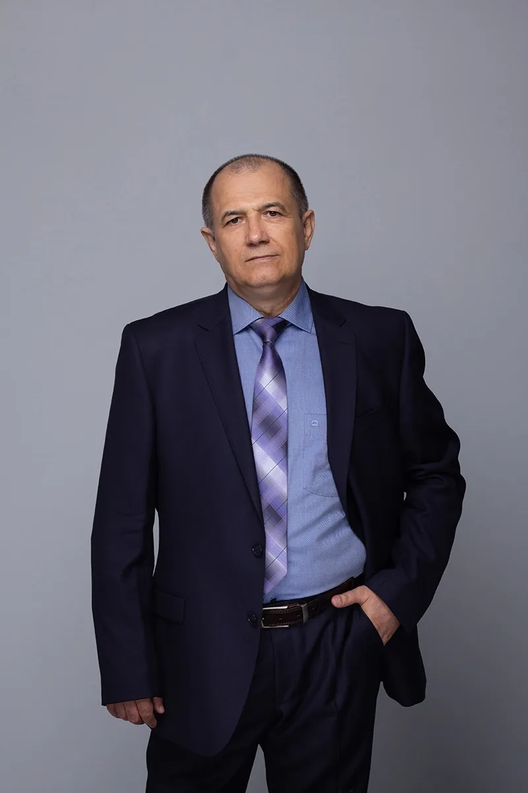
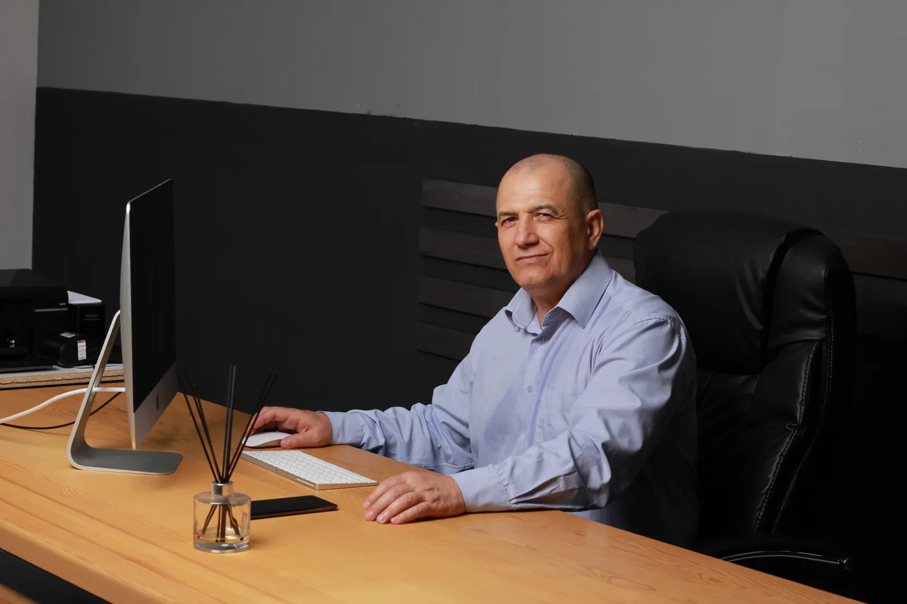
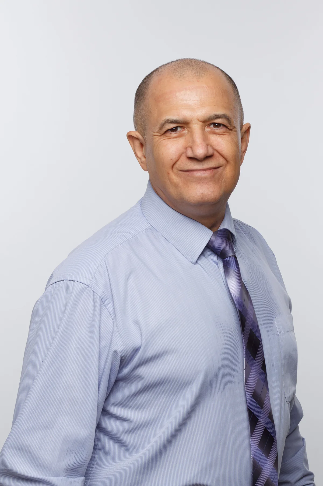

На консультациях разбираем особенности вашего дыхания, смысл практики и подбираем её под вас — я сопровождаю каждый шаг
Откроется чат в МАКС — отвечаю лично, обычно в течение дня. Первый вопрос ни к чему не обязывает

Андрей Туманов
методист-инструктор по методу Бутейко
Для кого эта практика
Ниже — ситуации, с которыми чаще всего приходят на консультацию. Проверьте, откликается ли хоть одна
гипертония, мигрени, тревожность и проблемы с ЖКТ идут привычным набором, и хочется наконец разобраться, а не заглушать по одному
панические атаки, скачки давления и головные боли начались раньше, чем должны
практика была, а результат не удержался
После каждой встречи у вас остаётся конкретный план на неделю и понимание, что именно изменилось

рассказываете о своей ситуации, договариваемся о времени созвона
определяем состояние, причины и подходящий формат дальнейшей работы
в начале недели разбираем теорию и упражнения, всю неделю вы тренируетесь сами
смотрим, что получилось, меняем практику под вас
Через 6 недель у вас — устойчивая практика и понимание своего дыхания, а не разовое упражнение, которое забудется
Каждая встреча проходит по видеосвязи и записывается — запись остаётся у вас как персональная видеоинструкция под вашу ситуацию
каждая запись сделана лично под вашу ситуацию и остаётся у вас навсегда
конкретные упражнения, которые вы делаете самостоятельно между встречами
практика меняется под то, что получилось лично у вас, а не идёт по общему шаблону
если возник вопрос, пишете по заранее оговорённому каналу связи; понадобится — назначаем внеплановую видеовстречу
Один случай подробно
годы с диагнозом «астма» — постоянная одышка, изматывающий кашель, ночная бессонница и короткая контрольная пауза
одышка, кашель и бессонница прошли, контрольная пауза заметно выросла
Источник: отзыв Жаннат Т.
«После каждой онлайн-встречи с Андреем поднимается настроение, чувствую силы и энергию»
Публикуются дословно, с указанием, кто и где их оставил
«У неё наладился сон, прошли головные боли, улучшилось общее фоновое состояние организма, появились силы»
«Испарилась заложенность носа. Просто нос теперь всегда дышит — и это очень непривычно и очень приятно»
«Нормализовалось давление. Прошла аритмия»
«У меня нормализовался сахар, и несмотря на всё же повышенное давление, я замечательно себя чувствую»
Кто проводит консультации
Андрей Туманов · методист-инструктор по методу Бутейко
Я дипломированный методист-инструктор по методу Бутейко, веду частную практику и работаю с людьми индивидуально. Не использую одну схему на всех — начинаю с того, чтобы разобраться в конкретной ситуации человека, и дальше строю практику под неё

От разовой консультации до полного курса на 6 недель — цена видна сразу, без клика
знакомство, определение состояния и причин, план дальнейших действий
7 000 ₽1–1,5 часа
для тех, кто уже знаком с методом, но потерял нить; практики больше, чем теории
12 000 ₽до 2 часов
2 встречи в неделю, личный план и корректировка каждую неделю
63 000 ₽12 встреч
2 групповых занятия в неделю и вопросы в чат в любое время
549 ₽в месяц
Последний шаг
Чем дольше держится привычный дыхательный стереотип, тем привычнее кажется тревожность и усталость — начать разбираться можно с одного сообщения
Откроется чат в МАКС — отвечаю лично, обычно в течение дня. Первый вопрос ни к чему не обязывает
Вопросы до заявки — на почту andrey.tymanov@yandex.ru или по телефону +7 937 524-96-64
Консультант по методу Бутейко, Казань и онлайн